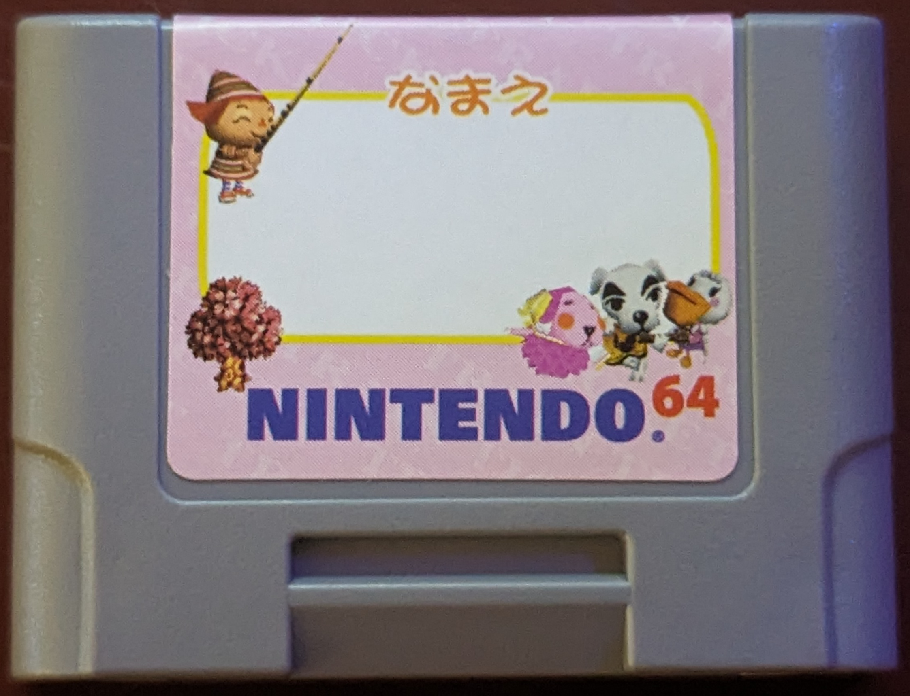
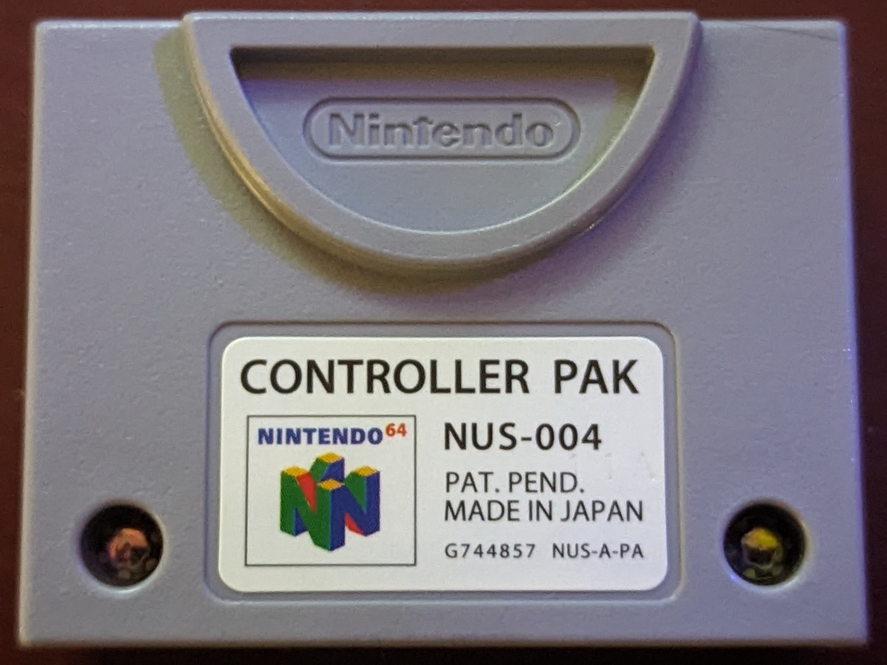
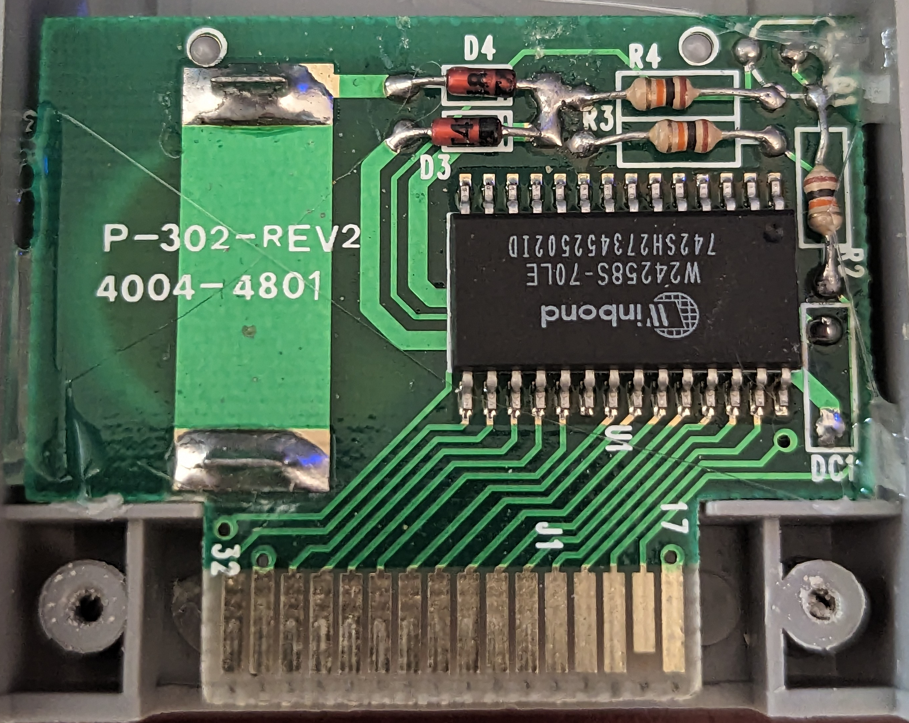
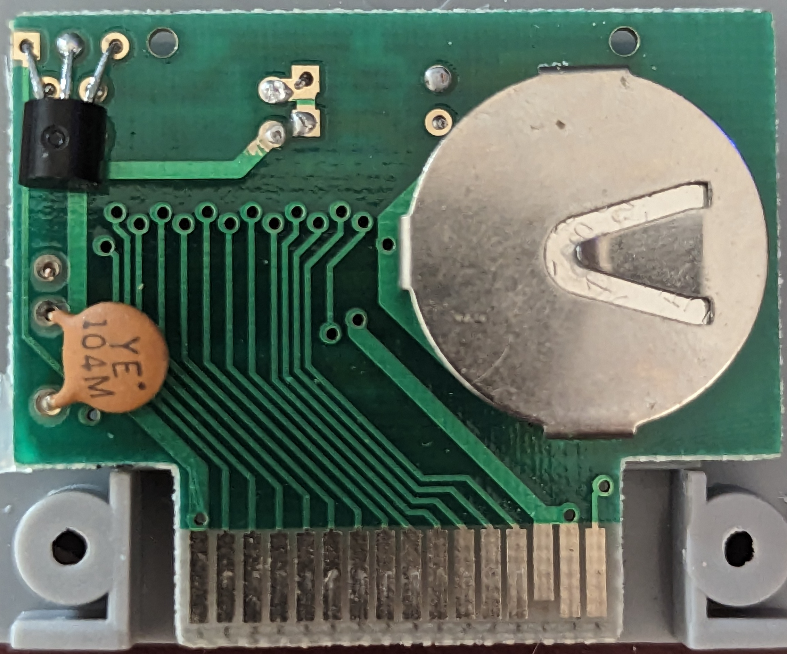
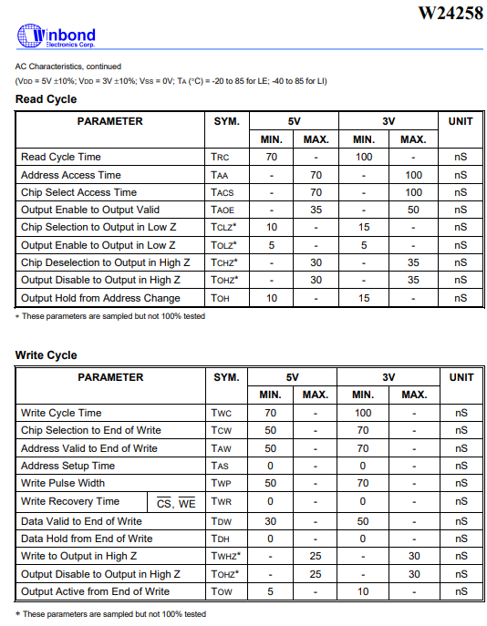

Nintento Controller Pak
An original OEM controller Pak, this one which is used for writing this document was included with Dōbutsu no Mori (Animal Forest).
Board
OEM pak utilizing a 32K X 8 CMOS STATIC RAM, backed up by a battery to keep memory while it is not inserted into a powered on system.
Unlike the OEM pack which uses a battery management IC, it utilizes a transistor, two diodes, and a couple resistors to manage the power.
Hardware Specs
Ram chip: Sharp LH52256CN-10LL
32K X 8 CMOS Static RAM
 |  |
|---|---|
 |  |
Timings
Access times for read/write cycle is 70 ns

Last modified: 27 September 2024